| № | Назва Міста |
|---|---|
| 1. | Відень (Австрія); |
| 2. | Цюрих (Швейцарія); |
| 3. | Ванкувер (Канада); |
| 4. | Мюнхен (Німеччина); |
| 5. | Окленд (Нова Зеландія); |
| 6. | Дюссельдорф (Німеччина); |
| 7. | Франкфурт (Німеччина); |
| 8. | Копенгаген (Данія); |
| 9. | Женева (Швейцарія); |
| 10. | Базель (Швейцарія). |
№10.Базель (Швейцарія)
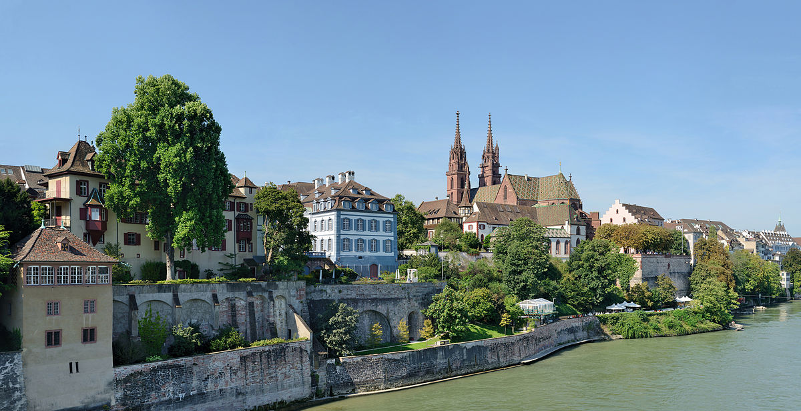
Ба́зель (фр. Bâle, нім. Basel, італ. Basilea) — місто на північному заході Швейцарії, столиця німецькомовного напівкантону Базель-Штадт.
Населення — 170,1 тис. осіб (2012 рік), третє за величиною місто країни. У межах агломерації проживає 830 тис. осіб (2004 рік)[2]. Розташований на берегах річки Рейн, у долині між горами Юри і Шварцвальда, біля кордону Німеччини та Франції.
Центр хімічної і фармацевтичної промисловості (фарби, вітаміни, агрохімія, харчові продукти, генетичні продукти). Штаб-квартири компаній Novartis, Hoffmann-La Roche та Coop, а також міжнародних банківських організацій, одна зі штаб-квартир банку UBS. Найстаріший університет Швейцарії. Річковий порт, на території Франції міжнародний аеропорт спільного використання.
Рейн ділить місто і його історичний центр на дві частини: Великий Базель на лівому березі та Малий Базель на правому. У Великому Базелі над Рейном підноситься романо-готичний собор з червоного пісковику, на Ринковій площі пізньоготична ратуша.
Докладніше
№9.Женева (Швейцарія)

Женева (фр. Genève, нім. Genf) — друге за чисельністю населення місто Швейцарії та столиця однойменного франкомовного кантону. Розташована на південному заході країни на мальовничому Женевському озері. Женева — це місто з дивовижною космополітичною атмосферою, який є штаб-квартирою для багатьох відомих міжнародних організацій: європейське відділення ООН, Червоний хрест, Всесвітня організація охорони здоров’я. Історичне ядро піднімається по схилу пагорба над річкою Рона і з трьох сторін оточене кільцем будівель і широкими вулицями, які повторюють контури старих укріплень. Женева — дуже горде місто. Кантоном Швейцарії вона стала тільки в 1803 році. Принаймні з 16 століття Женева була незалежною республікою. Офіційною мовою є французька, якою говорить переважна більшість населення і написані всі вуличні вивіски та знаки.
Докладніше
№8.Копенгаген (Данія)
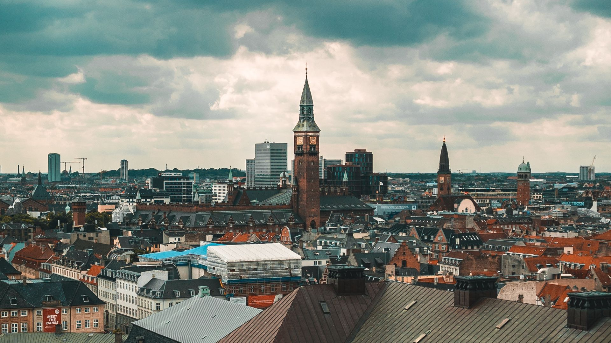
Копенгаген (дан. København) — столиця Данії та її найбільше місто. Розташований в західній частині країни на островах Зеландія, Слотсхольмен і Амагер з краєвидом на протоку Ересунн. Копенгаген — одне з найкрасивіших європейських міст, яке географічно і культурно пов’язує Скандинавію і Європу. Напевно, це сама спокійна зі скандинавських столиць, яка вразить милим провінційним шармом, чудовою морською атмосферою і пам’ятками світового рівня. Копенгаген — це місце, де старі казки сусідять з сучасністю, а теплий джаз змішується з холодною електронікою. Колись (в 11 столітті) на місці майбутньої столиці Данії розташовувалося маленьке рибальське село. Надалі завдяки морській торгівлі та рибальському промислу тут виросло багате місто і великий порт. Особливо портова атмосфера відчувається в Новій гавані, заповненій яскравими купецькими будинками, човнами та кораблями. Зараз Копенгаген — один з головних фінансових і культурних центрів Північної Європи. Місто славиться доброзичливими місцевими жителями, цікавим вуличним і нічним життям, унікальною культурою їжі, красивою історичною архітектурою, безліччю палаців, старовинних церков і музеїв.
Докладніше
№7.Франкфурт (Німеччина)
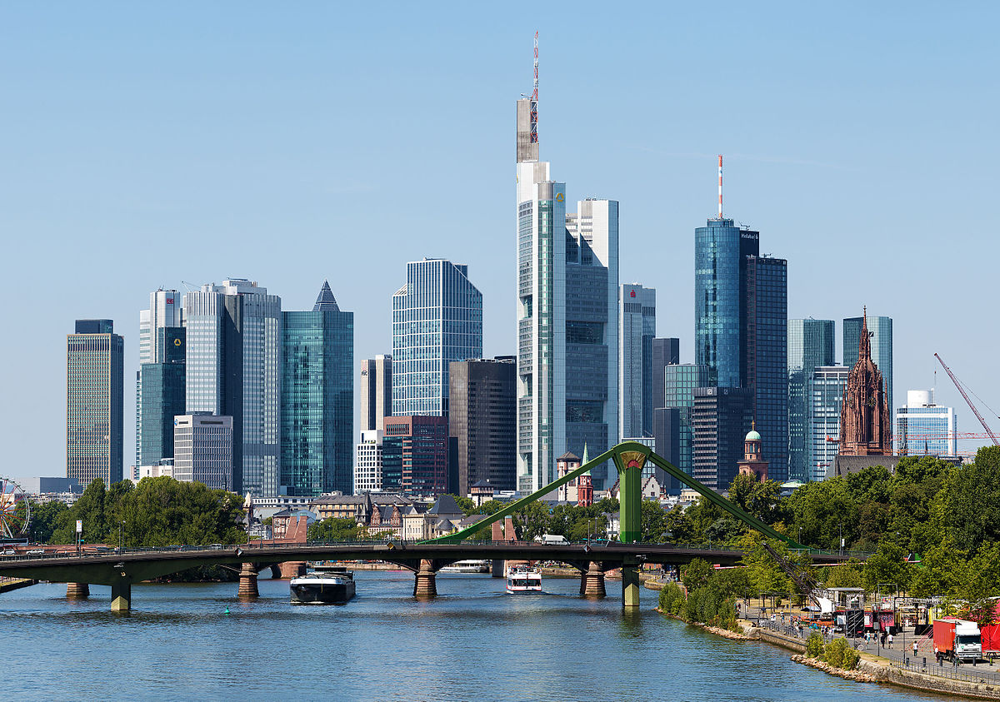
Франкфурт-на-Майні (нім. Frankfurt am Main) — одне з найбільших міст Німеччини, розташоване на південному заході країни ближче до центральної частини. Є столицею землі Гессен. Франкфурт-на-Майні — це один з головних ділових і фінансових центрів Європи. Тут розташовані штаб — квартири Європейського банку та Німецької фондової біржі. Аеропорт міста є третім за величиною в Європі, щорічно обслуговуючи більше ніж 50 млн пасажирів. Крім цього, тут проходить щорічний автосалон, який є однією з найбільших виставок такого роду у світі, та книжковий ярмарок. Франкфурт-на-Майні разюче виділяється своїм виглядом серед більшості німецьких міст. Це ультрасучасне місто з відмінною інфраструктурою і хмарочосами. Його історичний вигляд був практично загублений в ході бомбардувань під час Другої світової війни. Цікаво, що Франкфурт є одним з найдорожчих для життя міст Німеччини. Економіку міста визначають фінансові установи, ярмарки та транспорт. Також Франкфурт-на-Майні є великим освітнім і комерційним центром.
Докладніше
№6.Дюссельдорф (Німеччина)
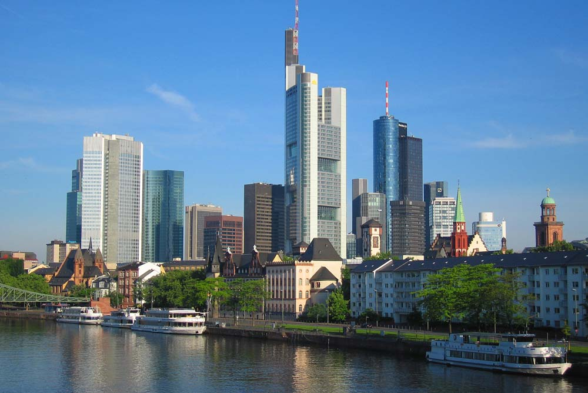
Дюссельдорф (нім. Düsseldorf)— одне з найсучасніших і економічно розвинених міст Німеччини, розташоване на заході країни. Є столицею регіону Північний Рейн-Вестфалія та одним з найбільших міст Рейнсько-Рурського регіону. Дюссельдорф поряд з Берліном, Гамбургом, Мюнхеном, Франкфуртом-на-Майні утворює п’ятірку міст, в яких зосереджена промислова, економічна та фінансова міць країни. Крім цього, Дюссельдорф ставиться своїм нічним життям і шопінгом, сучасною архітектурою і музеями, ярмарками та різними культурними подіями.
Докладніше
№5.Окленд (Нова Зеландія)
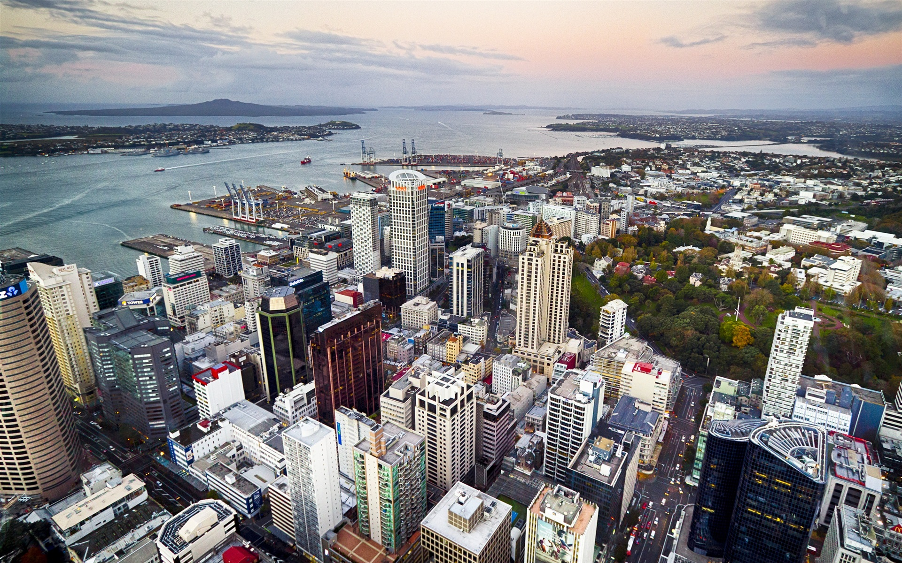
О́кленд (англ. Auckland, маорі Tāmaki-makau-rau) — найбільше місто Нової Зеландії з населенням приблизно 1,3 мільйона чоловік, при тому, що населення всієї країни становить приблизно 4,1 мільйона. Територія, яку займає Великим Оклендом, є найбільшою урбанізованої областю Нової Зеландії. Географічно та адміністративно до складу Великого Окленда входять: Окленд-Сіті (Auckland City) — центральна і найбільш урбанізована частина міста, Норт-Шор, Манукау, Вайтакере, а також урбанізовані частини районів Папакура (Papakura District), Родні (Rodney District) і Франклін (Franklin District).
Докладніше
№4.Мюнхен (Німеччина)
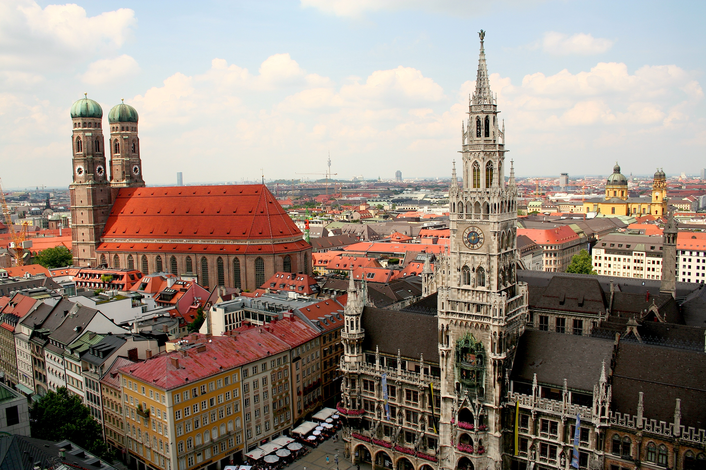
Мюнхен (нім. München, бав. Minga) — місто в південній частині Німеччини на берегах річки Ізар, є столицею Баварії й третім за величиною містом після Берліна і Гамбурга. У двох годинах їзди від нього знаходяться кілька великих озер і гірськолижні курорти, що сформувало в регіоні помірний клімат, з переходом від морського до континентального. Малосніжна зима і нежарке літо багато в чому сприяли тому, що екскурсійний відпочинок в Мюнхені актуальний цілий рік. Однак бувають і винятки, коли стовпчик термометра взимку може опуститися до -30 C°.
Докладніше
№3.Ванкувер (Канада)
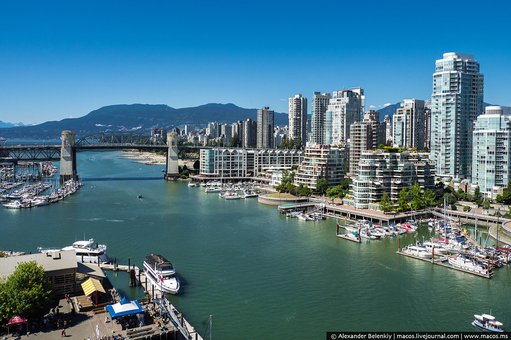
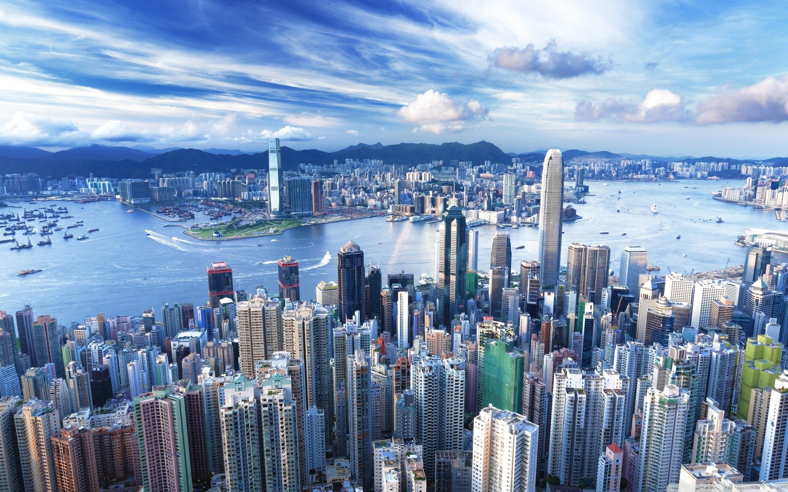
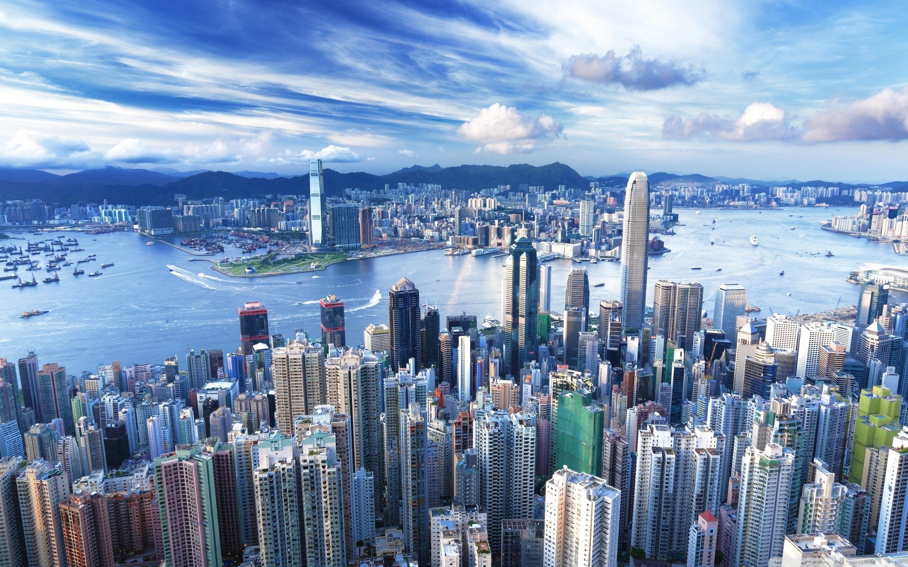
Ванкувер (англ. Vancouver) — місто на західному узбережжі Канади, найбільший населений пункт провінції Британська Колумбія та третій за розміром в Канаді. В 2010 році в Ванкувері проводилися XXI зимові Олімпійські ігри. Дослідницька група Economist Intelligence Unit (EIU) британського видання The Economist тричі — в 2005, 2007, 2009 роках надавала Ванкуверу звання «найкращого міста Землі»[7][8][9], в 2011 році це звання отримав Мельбурн[10].
Населення самого міста — 603 502 особи (станом на 2011 рік)[11], але в Великому Ванкувері (англ. Greater Vancouver) мешкає понад 2,3 млн осіб[11]. Великий Ванкувер також часто називають Лоуер Мейнленд (англ. Lower Mainland), маючи на увазі його розташування на узбережжі (на відміну від острова Ванкувер, де знаходиться столиця провінції м. Вікторія). Разом з іншими сусідніми муніципалітетами Ванкувер входить до ради Greater Vancouver Regional District (GVRD).
Місто заселене в 1860-х унаслідок імміграції спричиненої золотою лихоманкою каньйону Фрейзер та стрімко розвинулось з малого деревообробного містечка в міський центр з появою у Ванкувері трансконтинентальної канадської залізниці Canadian Pacific Railway y 1887 році. Порт Ванкувер набув міжнародного значення після завершення Панамського каналу: у 1920-х канал зменшив вартість перевезення та уможливив експортування зерно з рівнин Канади за кордон. З тих пір порт Ванкувера став найбільш завантаженим портом країни — з нього експортується більше вантажів ніж через будь-який інший порт Північної Америки[12].
Тим не менш, незважаючи на велике значення порту, економіка Ванкувера значно диверсифікована. У Ванкувері набуває великого значення туризм. За останні роки місто стало третім за розмахом центром кіноіндустрії Північної Америки за такими гігантами як Лос-Анджелес та Нью-Йорк Сіті через що набув назви Північний Голлівуд. Нещодавно в Ванкувері почала стрімко розвиватись індустрія високих технологій. Зокрема індустрія комп'ютерних ігор.
Протягом останніх декількох років Ванкувер вважається одним з трьох найкомфортніших для життя міст у світі. У 2006 році Ванкувер був 56-м серед 143 головних міст планети і другим в Канаді після Торонто.
Докладніше
№2.Цюрих (Швейцарія)
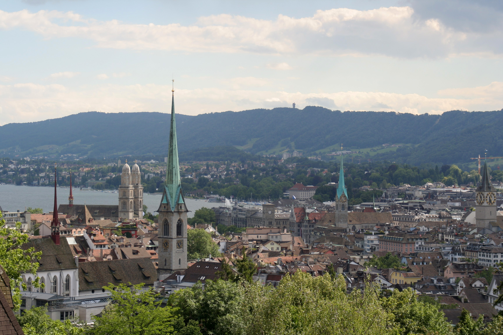
Цюрих (Zurich) – найбільше місто Швейцарії та столиця однойменного німецькомовного кантону. Розташований в північно-східній частині країни в мальовничій місцевості на березі Цюрихського озера. Цюріх — економічний і культурний центр Швейцарії, а також один з найбільших фінансових центрів Європи. Але це не нудне місто банків і штаб-квартир. Цюрих — це захопливе місце з цікавими пам’ятками, добре збереженим старим містом з середньовічними та ренесансними будинками, безліччю музеїв і галерей. Цюрих є одним з найдорожчих міст світу, але, одночасно, одним з найкращих за якістю життя. Місто відоме своєю чистотою, акуратністю і ліберальною атмосферою, яка, свого часу, привернула таких історичних особистостей як: Ленін, Бюхнер, Юнг, Манн. Цюріх підійде для всіх туристів: любителі історії можуть гуляти старим містом і вивчати старовинні пам’ятки, любителі культури — відвідати численні музеї та художні галереї, любителі тусовок — прогулятися по клубах, барах і ресторанах.
Докладніше
№1.Відень (Австрія)
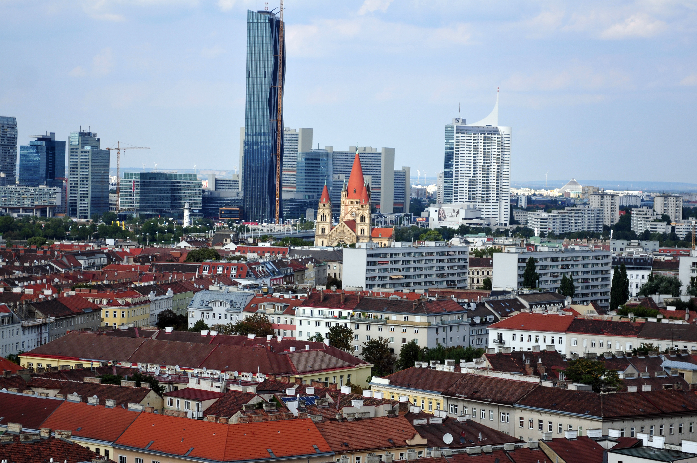
Відень (нім. Wien, бавар. Wean, лат. Vindobona) – столиця і найбільше місто Австрії, розташоване в північно-східній частині країни. Це мегаполіс з неповторним шармом, енергією та атмосферою, історичний центр якого включений в список об’єктів Всесвітньої спадщини ЮНЕСКО. Відень — це культурна столиця Європи, місто дивне романтичне і відкрите, яке зберегло свою колосальну історичну спадщину. Тут серед просторих імперських площ і розкішних палаців таяться дивовижні пам’ятки, пам’ятки архітектури й шедеври мистецтва. Відень є одним з найпопулярніших міст Європи. Столиця Австрії приваблює гастрономічних естетів своїми кулінарними шедеврами й ресторанами, модників — своїми магазинами, богему – театрами, оперою, виставками та музеями. Відень вважається містом музики та мистецтва. Тут жили й творили геніальні композитори Бетховен, Моцарт, Шуберт і Штраус, а також багато відомих художників, які перетворили місто в скарбницю Європи.
Докладніше